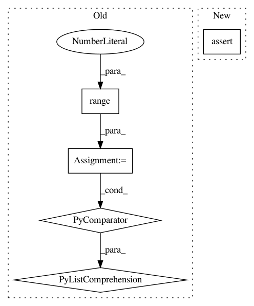

2f02fc841773a2e2efba400f5cecfe294c31de10,tests/trees/test_isoup_tree.py,,test_isoup_tree_coverage,#,138
Before Change
// Invalid leaf prediction option
learner = iSOUPTreeRegressor(
leaf_prediction="MEAN",
nominal_attributes=[i for i in range(3)]
)
print(learner.split_criterion)
// Invalid split_criterion
learner.split_criterion = "ICVR"
After Change
)
tree.partial_fit(X, y)
assert calculate_object_size(tree, "MB") <= max_size_mb
def test_isoup_tree_model_description():
stream = RegressionGenerator(
In pattern: SUPERPATTERN
Frequency: 4
Non-data size: 5
Instances
Project Name: scikit-multiflow/scikit-multiflow
Commit Name: 2f02fc841773a2e2efba400f5cecfe294c31de10
Time: 2020-04-16
Author: saulomastelini@gmail.com
File Name: tests/trees/test_isoup_tree.py
Class Name:
Method Name: test_isoup_tree_coverage
Project Name: dit/dit
Commit Name: 178bf90024f5cf67f0ade65195db07640e1e20c9
Time: 2013-10-09
Author: ryangregoryjames@gmail.com
File Name: dit/algorithms/tests/test_extropy.py
Class Name:
Method Name: test_J4
Project Name: scikit-multiflow/scikit-multiflow
Commit Name: 2f02fc841773a2e2efba400f5cecfe294c31de10
Time: 2020-04-16
Author: saulomastelini@gmail.com
File Name: tests/trees/test_stacked_single_target_hoeffding_tree_regressor.py
Class Name:
Method Name: test_hoeffding_tree_coverage
Project Name: scikit-multiflow/scikit-multiflow
Commit Name: 2f02fc841773a2e2efba400f5cecfe294c31de10
Time: 2020-04-16
Author: saulomastelini@gmail.com
File Name: tests/trees/test_hoeffding_tree.py
Class Name:
Method Name: test_hoeffding_tree_coverage